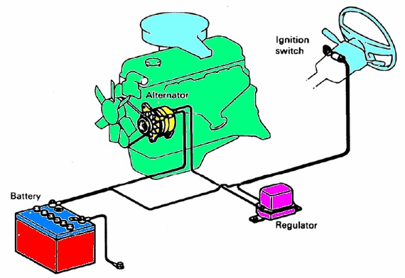
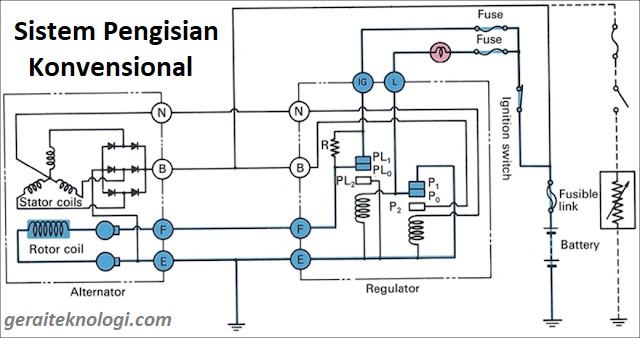

Tujuan Pembelajaran
- Menjelaskan fungsi sistem pengisian pada mobil.
- Menjelaskan alur energi dari alternator ke baterai dan beban listrik.
- Mengenali komponen utama alternator, regulator, baterai, lampu pengisian dan kabel penghubung.
- Melakukan pemeriksaan dasar tegangan pengisian dan mengenali gejala gangguan.
Petunjuk
Gunakan menu di atas secara berurutan. Jalankan simulasi dengan tombol START, klik komponen untuk melihat fungsi, dan gunakan Quiz untuk evaluasi.
Catatan: media ini menggunakan model umum sistem pengisian konvensional mobil dengan alternator dan regulator eksternal. Detail terminal dapat berbeda sesuai kendaraan.
Pretest 5 Soal
Simulasi Prinsip Kerja Sistem Pengisian
Tekan START untuk melihat urutan energi listrik.
1. Mesin berputar
→
2. Alternator
→
3. Regulator
→
4. Baterai
→
5. Beban
Saat mesin berputar, alternator menghasilkan energi listrik. Regulator mengendalikan tegangan agar sesuai kebutuhan sistem.
Alur Energi
Rangkaian Sistem Pengisian Konvensional
Klik komponen pada diagram untuk melihat fungsi dan titik pemeriksaan.
Gambar Rangkaian Sistem Pengisian

Gambar rangkaian dari aset yang Bapak lampirkan.
Rangkaian Alternatif

Klik kartu komponen.
Komponen Sistem Pengisian
Pilih salah satu komponen untuk melihat gambar dan fungsinya.
Pemeriksaan Dasar
| Pemeriksaan | Kondisi/Titik Ukur | Interpretasi |
|---|---|---|
| Tegangan baterai mesin mati | Ukur pada terminal baterai | Digunakan untuk menilai kondisi awal baterai. |
| Tegangan pengisian | Mesin hidup; ukur terminal baterai | Harus meningkat dari kondisi mesin mati dan stabil sesuai spesifikasi kendaraan. |
| Penurunan tegangan kabel | Periksa jalur positif dan massa | Penurunan yang berlebihan menunjukkan hambatan sambungan/kabel. |
| Lampu charge | Amati saat kunci ON dan mesin hidup | Perubahan kondisi lampu menjadi petunjuk awal diagnosis. |
Keselamatan: Jangan melepas terminal baterai saat mesin hidup untuk "menguji alternator". Gunakan multimeter sesuai prosedur servis.
Simulasi Tegangan Pengisian
Atur putaran mesin dan beban untuk melihat perubahan ilustratif tegangan pengisian. Ini simulasi pembelajaran, bukan alat ukur nyata.
RPM Mesin
1500
Beban Listrik
30%
Tegangan Simulasi
13.9 V
Simulasi Lampu Charge
Kunci OFF.
Troubleshooting
Lampu charge menyalaPeriksa belt penggerak, kabel, regulator, output alternator, dan sambungan massa.
Tegangan pengisian rendahPeriksa kondisi baterai, belt, sambungan, regulator, diode/rectifier, dan alternator.
Tegangan berlebihanPeriksa regulator dan jalur referensi/sensing sesuai sistem kendaraan.
Baterai sering tekorPeriksa sistem pengisian sekaligus kemungkinan beban/arus bocor saat kendaraan mati.
🎬 Video Pembelajaran
Video cara kerja sistem pengisian konvensional mobil dari file yang Bapak lampirkan.
Video: Cara Sistem Pengisian. Gunakan tombol ⛶ pada kontrol video untuk layar penuh.
LKPD Praktik — Pemeriksaan Sistem Pengisian
- Identifikasi komponen sistem pengisian pada kendaraan.
- Periksa kondisi fisik baterai dan terminal.
- Ukur tegangan baterai sebelum mesin hidup.
- Hidupkan mesin dan ukur tegangan pengisian.
- Catat hasil pengukuran dan bandingkan dengan spesifikasi manual servis.
- Buat kesimpulan kondisi sistem pengisian.
| Parameter | Hasil Pengukuran | Spesifikasi | Kesimpulan |
|---|---|---|---|
| Tegangan awal baterai | |||
| Tegangan pengisian | |||
| Kondisi lampu charge |